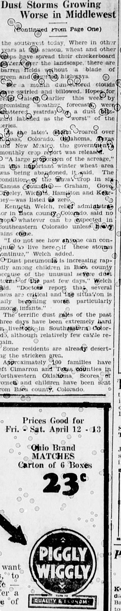

HN HN-493 · April 11, 1935 · Disasters, Accidents & Emergencies > Hurricanes, Tornadoes, Dust & Severe Storms > Dust storms and soil erosion emergencies
Source: Indianapolis Times, p. 1 — original page; National Weather Service Dust Bowl history.
Report: A dispatch said eight states were shrouded by dust, roads disappeared from view, crops were ruined, and farm families in the Plains were moving away from their land.
Assessment: This was a documented Dust Bowl environmental and agricultural crisis, associated with drought, soil disturbance, high winds, and economic distress. The description is contemporary observation, not a scientific proof of one single cause. Black Sunday on April 14 came after this April 11 report, so the article must not be mislabeled as coverage of that later specific storm.
Authentic scans retrieved from Historic Oregon Newspapers (University of Oregon). Article crops are located using the archive's own ALTO OCR word coordinates and rendered at native crop resolution; page scans are 1,200-pixel-wide renditions. No images were generated, mocked, or retouched.

Not yet acquired. Queued for provider-specific acquisition testing (see source-acquisition manifest).
URL (preserved verbatim): https://newspapers.library.in.gov/?a=d&d=IPT19350411.1.1
Saved research report: Historical_Newspaper_Event_Research_478-502_2026-10-23.md
Evidence note: A newspaper report means a historical publication made a claim; it does not establish that claim as fact. Contemporary reporting is separated from later scholarly context and our own assessment.